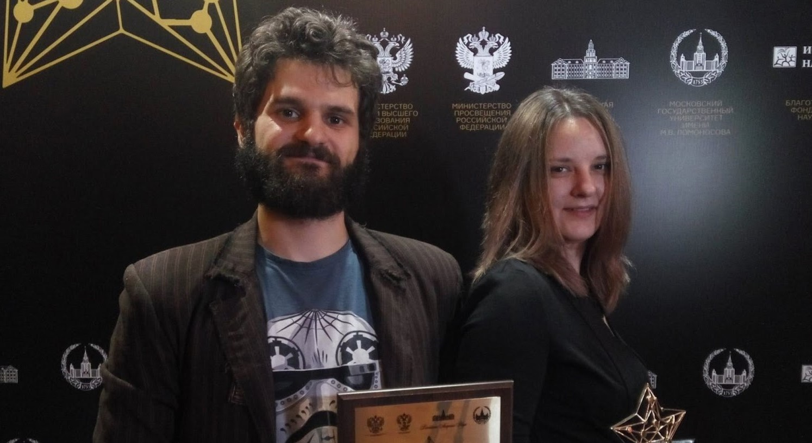
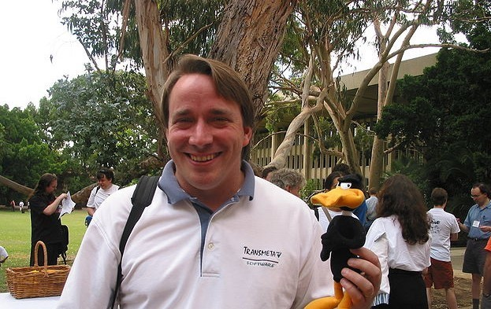
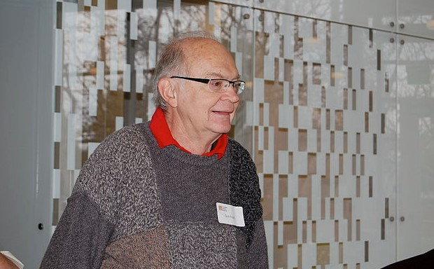

Grant Anderson, the creator of one of the most popular YouTube channels about higher mathematics, 3 blue 1 brown, agreed to answer the questions of Habrovchan.

The editors of Habr managed to talk with representatives of the Russian Vert Dider project - editor-in-chief Elena Smotrova and coordinator of translators and editors Alexey Malov.

In the professional environment, Linus Torvalds is known as a person who does not seek to please people and does not hesitate to express himself.

He is the author of a unique monograph "The Art of Programming", which has become a textbook and a desktop book for programmers all over the world. Professor Emeritus at Stanford.
Today he heads the public organization "Alliance for Affordable Internet", the main goal of which is an affordable and fast Internet for everyone. The organization enjoys the support of large corporations - Google.
Another major development is NEWS, a computing distribution system in computer networks. The list of projects he worked on is extensive.
The first version of the compiler was written under DOS. Later, the compiler was integrated into the Turbo Pascal environment. Thanks to the Heilsberg compiler, the productivity of work in the IT field has increased several times.
Zuckerberg is convinced that small teams are the most effective. They can work more productively than large teams. Therefore, only 10,000 people in the world are involved in the maintenance of a huge social network.
Torrent is popular all over the world. The number of BitTorrent users is estimated at 250 million people. Huge amounts of information are downloaded through torrents. Unfortunately, the capabilities of torrents are actively used by "pirates".